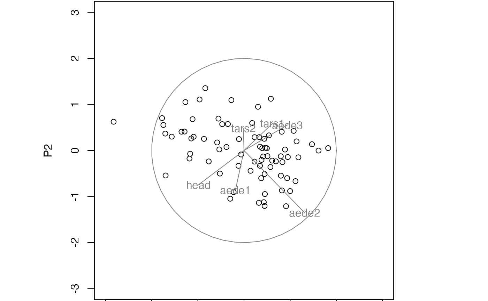
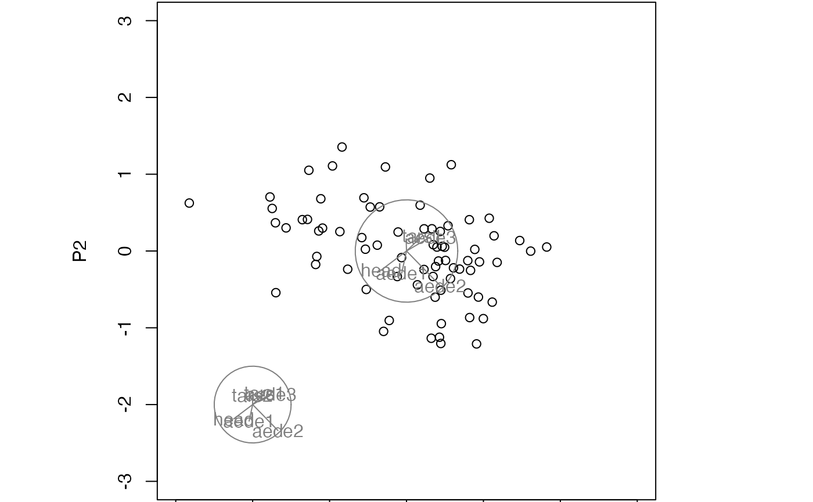

Draw tour axes on the projected data with base graphics
Usage
draw_tour_axes(
proj,
labels,
limits = 1,
position = "center",
axis.col = "grey50",
axis.lwd = 1,
axis.text.col = "grey50",
longlabels = FALSE,
...
)Arguments
- proj
matrix of projection coefficients
- labels
variable names for the axes, of length the same as the number of rows of proj
- limits
value setting the lower and upper limits of projected data, default 1
- position
position of the axes: center (default), bottomleft or off
- axis.col
colour of axes, default "grey50"
- axis.lwd
linewidth of axes, default 1
- axis.text.col
colour of axes text, default "grey50"
- longlabels
text labels only for the long axes in a projection, default FALSE
- ...
other arguments passed
Examples
data(flea)
flea_std <- apply(flea[,1:6], 2, function(x) (x-mean(x))/sd(x))
prj <- basis_random(ncol(flea[,1:6]), 2)
flea_prj <- as.data.frame(as.matrix(flea_std) %*% prj)
par(pty = "s", mar = rep(0.1, 4))
plot(flea_prj$V1, flea_prj$V2,
xlim = c(-3, 3), ylim = c(-3, 3),
xlab="P1", ylab="P2")
draw_tour_axes(prj, colnames(flea)[1:6], limits=3)

plot(flea_prj$V1, flea_prj$V2,
xlim = c(-3, 3), ylim = c(-3, 3),
xlab="P1", ylab="P2")
draw_tour_axes(prj, colnames(flea)[1:6], limits=3, position="bottomleft")
draw_tour_axes(prj, colnames(flea)[1:6], longlabels=TRUE)
